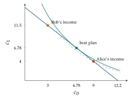

1.3. The best plan#
1.3.1. Consumption smoothing#
Theorem 1.1 (The Euler equation)
Under Assumption 1.1 and Assumption 1.2, the consumer has a unique optimal plan \((c_0^*,c_1^*)\). It is interior and is characterised by the budget constraint together with
Proof strategy (Theorem 1.1)
Substitute the budget into the objective, so that the problem has one choice variable. Then show the objective is strictly concave, so the first-order condition is both necessary and sufficient, and the solution unique.
Proof of Theorem 1.1
Step 1: one variable. Write \(c_1=(1+r)(W-c_0)\) and let \(V(c_0)=u(c_0)+\delta u\big((1+r)(W-c_0)\big)\) for \(c_0\in(0,W)\).
Why this step?
Every plan on the budget line is described by its \(c_0\); plans below the line waste money, since \(u\) is strictly increasing.
Step 2: strict concavity. \(V''(c_0)=u''(c_0)+\delta(1+r)^2u''(c_1)<0\), since \(u''<0\).
Step 3: an interior solution exists. As \(c_0\to0\), \(u'(c_0)\to\infty\), so \(V'>0\); as \(c_0\to W\), \(c_1\to0\) and \(V'\to-\infty\). Since \(V'\) is continuous and strictly decreasing, it has exactly one zero.
Why this step?
This is “sign the derivative”: we locate the optimum by the sign of \(V'\) on either side of it, which proves existence and uniqueness at once.
Step 4: the condition. \(V'(c_0)=u'(c_0)-\delta(1+r)u'(c_1)=0\) rearranges to the Euler equation.
Interpretation. The left side is the marginal rate of substitution: how many pounds tomorrow she would give up for one more pound today. The right side is what the market charges, adjusted for impatience. If \(\delta(1+r)=1\), the Euler equation says \(u'(c_0^*)=u'(c_1^*)\), so \(c_0^*=c_1^*\): she consumes the same amount in both periods, however unevenly her income arrives. Because \(u\) is concave, a pound is worth more in the period when she has less, so she moves income from the rich period to the poor one. This is consumption smoothing.
Example 1.2 (Alice’s best plan)
In Example 1.1, \(\delta(1+r)=0.8\times1.25=1\), so \(c_0^*=c_1^*=c\) with \(c+c/1.25=12.2\), giving \(c=6.78\). She saves \(9-6.78=2.22\). Her utility rises from \(4.6\) to \(1.8\sqrt{6.78}=4.69\).


Fig. 1.1 The intertemporal budget line for \(r=0.25\) (blue) and the best plan, where an indifference curve (teal) is tangent to it. The grey curve passes through Alice’s income: everything between it and the teal curve is a gain from the capital market. Bob’s income lies on the same line, so his best plan is the same.#
1.3.2. Net lender or net borrower?#
Example 1.3 (Bob)
Bob has Alice’s tastes but earns most of his income later: \(x_0=3\), \(x_1=11.5\). At \(r=0.25\) his wealth is \(3+11.5/1.25=12.2\), the same as Alice’s. His budget line is therefore the same line, and so is his best plan: \(6.78\) in each period. But Alice reaches it by lending \(2.22\), and Bob by borrowing \(3.78\).
Who lends is decided by when income arrives, not by how much there is. The next result says how to tell without solving for the optimum.
Proposition 1.1 (Who lends)
Under Assumption 1.1 and Assumption 1.2, the consumer is a net lender (\(s_0^*>0\)) if and only if, at her endowment,
a net borrower if and only if the inequality is reversed, and consumes her income if it holds with equality.
Proof of Proposition 1.1
Step 1: the sign of \(V'\) at the endowment. With \(V\) as in the proof of Theorem 1.1, \(V'(x_0)=u'(x_0)-\delta(1+r)u'(x_1)\), which is negative exactly when the inequality holds.
Why this step?
At \(c_0=x_0\) she neither saves nor borrows, so \(c_1=x_1\).
Step 2: compare with the optimum. \(V'\) is strictly decreasing and \(V'(c_0^*)=0\). So \(V'(x_0)<0\) if and only if \(x_0>c_0^*\), that is, \(s_0^*>0\). The other two cases follow in the same way.
Interpretation. The left side is the slope of her indifference curve at the endowment. If it is flatter than the budget line, today is plentiful relative to tomorrow, and she lends (T2). A lower \(\delta\) raises the left side, so a more impatient consumer is more likely to borrow. For Alice, \(u'(9)/(0.8\,u'(4))=\sqrt{4/9}/0.8=0.83<1.25\): she lends.